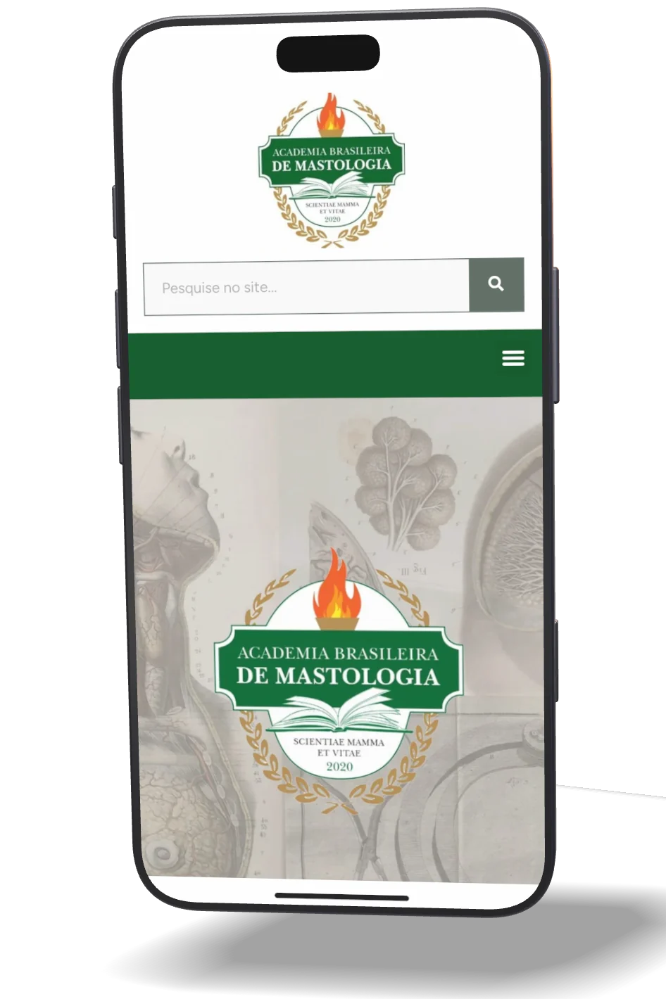

( Projeto )
ABMasto
Academia médica · Rio de Janeiro, RJ

O desafio
A Academia Brasileira de Mastologia foi fundada em 1 de agosto de 2020, em plena pandemia, para preservar a memória dos mastologistas brasileiros: a história da especialidade, seus pioneiros e seus prêmios. É membro da Federação Brasileira de Academias de Medicina.
Em 2023, a Academia precisava de um site que reunisse num só lugar o que até então estava disperso: a história e os símbolos da instituição, os acadêmicos, o acervo, os prêmios e as notícias para os membros.
A solução
Construímos o site em WordPress. O menu segue a estrutura da Academia: Institucional (história, palavra do presidente, bandeira, brasão e medalhão), Acadêmicos, Acervo (Biblioteca Mastológica Brasileira e Museu), Prêmios e Revista da Academia.
A página inicial traz os comunicados e as últimas notícias, com inscrição por e-mail para quem quer receber as atualizações, e a busca encontra qualquer página do site.
Desde o lançamento, o site continua com a Bumavit no plano de manutenção: atualizações, backups e as publicações da Academia.